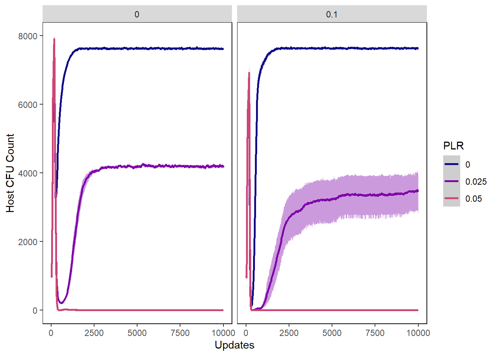
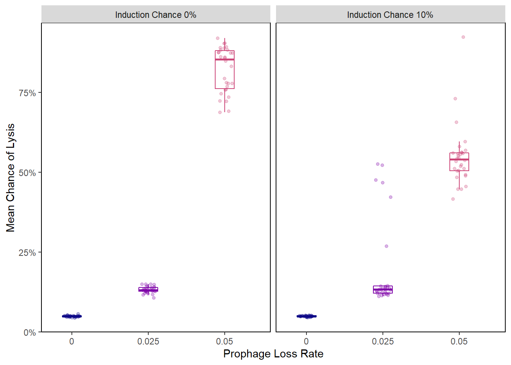
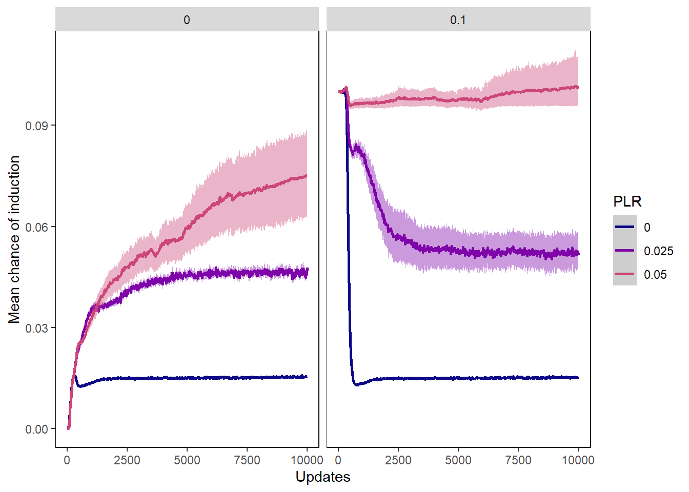
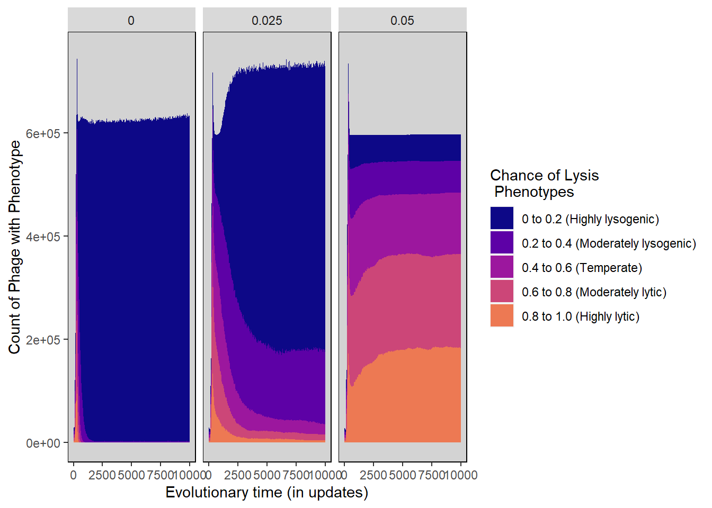

Chapter 7 Induction Only - Benefit Off
The following includes the R scripts that we used to generate our graphs for the data where induction was possible for lysogenic phage, but the potential benefit to the hosts of lysogenic phage was turned off.
7.1 Gather Settings and Treatments
General settings
ind_folder <- "Data/InductionOnly/" #Folder where datafiles are
ind_treatments <- c("PLR", "COI") #Names of the treatments being tested - should match what is in filenamesStacked histogram settings
induction_separate_by <- "PLR" #Facet wrap induction stacked histogram by Prophage Loss Rate
#How induction stacked histogram bins should be collapsed and renamed
induction_histogram_bins <- c(Hist_0.0 = "0 to 0.2 (Very low induction)",
Hist_0.1 = "0 to 0.2 (Very low induction)",
Hist_0.2 = "0.2 to 0.4 (Moderately low induction)",
Hist_0.3 = "0.2 to 0.4 (Moderately low induction)",
Hist_0.4 = "0.4 to 0.6 (Moderate induction)",
Hist_0.5 = "0.4 to 0.6 (Moderate induction)",
Hist_0.6 = "0.6 to 0.8 (Moderately high induction)",
Hist_0.7 = "0.6 to 0.8 (Moderately high induction)",
Hist_0.8 = "0.8 to 1.0 (Very high induction)",
Hist_0.9 = "0.8 to 1.0 (Very high induction)")
lysis_separate_by <- "PLR" #Facet wrap lysis chance stacked histogram by Prophage Loss Rate
#How lysis chance stacked histogram bins should be collapsed and renamed
lysis_histogram_bins <- c(Hist_0.0 = "0 to 0.2 (Highly lysogenic)",
Hist_0.1 = "0 to 0.2 (Highly lysogenic)",
Hist_0.2 = "0.2 to 0.4 (Moderately lysogenic)",
Hist_0.3 = "0.2 to 0.4 (Moderately lysogenic)",
Hist_0.4 = "0.4 to 0.6 (Temperate)",
Hist_0.5 = "0.4 to 0.6 (Temperate)",
Hist_0.6 = "0.6 to 0.8 (Moderately lytic)",
Hist_0.7 = "0.6 to 0.8 (Moderately lytic)",
Hist_0.8 = "0.8 to 1.0 (Highly lytic)",
Hist_0.9 = "0.8 to 1.0 (Highly lytic)")7.2 Collect and Munge Data
Gather filenames
ind_all_filenames <- list.files(ind_folder)
ind_freeliving_filenames <- str_subset(ind_all_filenames, "FreeLivingSyms")
ind_hostval_filenames <- str_subset(ind_all_filenames, "HostVals")
ind_induction_filenames <- str_subset(ind_all_filenames, "InductionChance")
ind_lysischance_filenames <- str_subset(ind_all_filenames, "LysisChance")
ind_phagevals_filenames <- str_subset(ind_all_filenames, "SymVals")Combine time series data for all subsets of datafiles
ind_freeliving <- combine_time_data(ind_freeliving_filenames, ind_folder, ind_treatments)
ind_hostvals <- combine_time_data(ind_hostval_filenames, ind_folder, ind_treatments)
ind_inductionchances <- combine_time_data(ind_induction_filenames, ind_folder, ind_treatments)
ind_lysischances <- combine_time_data(ind_lysischance_filenames, ind_folder, ind_treatments)
ind_phagevals <- combine_time_data(ind_phagevals_filenames, ind_folder, ind_treatments)Rearrange time series data into stacked histogram data
ind_induction_histdata <- combine_histogram_data(ind_inductionchances,
induction_separate_by,
induction_histogram_bins)
ind_lysis_histdata <- combine_histogram_data(ind_lysischances,
lysis_separate_by,
lysis_histogram_bins)Extract information about average genome values at the end of the runs
ind_final_freeliving <- last_update(ind_freeliving)
ind_final_hostvals <- last_update(ind_hostvals)
ind_final_inductionchances <- last_update(ind_inductionchances)
ind_final_lysischances <- last_update(ind_lysischances)
ind_final_phagevals <- last_update(ind_phagevals)7.3 Analyze Data
7.3.1 Summary Stats
ind_lysis_summary_stats <- ind_final_lysischances %>%
group_by(PLR, COI) %>%
summarise(final_chance_of_lysis = mean(mean_lysischance*100))## `summarise()` has grouped output by 'PLR'. You can override using the `.groups` argument.ind_lysis_summary_stats## # A tibble: 6 x 3
## # Groups: PLR [3]
## PLR COI final_chance_of_lysis
## <fct> <fct> <dbl>
## 1 0 0 4.92
## 2 0 0.1 4.93
## 3 0.025 0 13.2
## 4 0.025 0.1 19.2
## 5 0.05 0 82.2
## 6 0.05 0.1 54.8ind_induction_summary_stats <- ind_final_inductionchances %>%
group_by(PLR, COI) %>%
summarise(Final_COI = mean(mean_inductionchance*100))## `summarise()` has grouped output by 'PLR'. You can override using the `.groups` argument.ind_induction_summary_stats## # A tibble: 6 x 3
## # Groups: PLR [3]
## PLR COI Final_COI
## <fct> <fct> <dbl>
## 1 0 0 1.56
## 2 0 0.1 1.55
## 3 0.025 0 4.78
## 4 0.025 0.1 5.16
## 5 0.05 0 7.50
## 6 0.05 0.1 10.17.3.2 Wilcox tests
0% chance of induction
#At a chance of induction of 0%, compare PLR 0% to PLR 2.5%
ind_PLR0 <- subset(subset(ind_final_inductionchances, PLR == "0"), COI == "0")
ind_PLR0.025 <- subset(subset(ind_final_inductionchances, PLR == "0.025"), COI == "0")
wilcox.test(ind_PLR0$mean_inductionchance, ind_PLR0.025$mean_inductionchance)$p.value * bonferroni## [1] 1.352899e-16#At a chance of induction of 0%, compare PLR 0% to PLR 5%
ind_PLR0.05 <- subset(subset(ind_final_inductionchances, PLR == "0.05"), COI == "0")
wilcox.test(ind_PLR0$mean_inductionchance, ind_PLR0.05$mean_inductionchance)$p.value * bonferroni## [1] 1.352899e-16Compare Chance of Lysis for PLR 2.5% across all levels of induction
noInd_PLR2.5 <- subset(ind_final_lysischances, PLR == "0.025")
ind_PLR2.5_COI0.0 <- subset(subset(ind_final_lysischances, PLR == "0.025"), COI == "0")
ind_PLR2.5_COI0.1 <- subset(subset(ind_final_lysischances, PLR == "0.025"), COI == "0.1")
wilcox.test(noInd_PLR2.5$mean_lysischance, ind_PLR2.5_COI0.0$mean_lysischance)$p.value * bonferroni## [1] 6.993321wilcox.test(noInd_PLR2.5$mean_lysischance, ind_PLR2.5_COI0.1$mean_lysischance)$p.value * bonferroni## [1] 6.99335Compare Chance of Lysis for PLR 5% across all levels of induction
noInd_PLR5 <- subset(ind_final_lysischances, PLR == "0.05")
ind_PLR5_COI0.0 <- subset(subset(ind_final_lysischances, PLR == "0.05"), COI == "0")
ind_PLR5_COI0.1 <- subset(subset(ind_final_lysischances, PLR == "0.05"), COI == "0.1")
wilcox.test(noInd_PLR5$mean_lysischance, ind_PLR5_COI0.0$mean_lysischance)$p.value * bonferroni## [1] 0.003003302wilcox.test(noInd_PLR5$mean_lysischance, ind_PLR5_COI0.1$mean_lysischance)$p.value * bonferroni## [1] 0.0030033027.4 Generate Graphs
7.4.1 Host graphs
Host count
hostcount_plot <- ggplot(data=ind_hostvals,
aes(x=update, y=count,
group=PLR, colour=PLR)) +
ylab("Host Count") + xlab("Updates") +
stat_summary(aes(color=PLR, fill=PLR),
fun.data="mean_cl_boot", geom=c("smooth"), se=TRUE) +
theme(panel.background = element_rect(fill='white', colour='black')) +
theme(panel.grid.major = element_blank(), panel.grid.minor = element_blank()) +
guides(fill="none") + scale_colour_manual(values=plasma(nlevels(ind_hostvals$PLR)+2)) +
scale_fill_manual(values=plasma(nlevels(ind_hostvals$PLR)+2))
hostcount_plot + facet_wrap(~COI)
Host cfu count
hostcount_cfu_plot <- ggplot(data=ind_hostvals, aes(x=update, y=cfu_count,
group=PLR, colour=PLR)) +
ylab("Host CFU Count") + xlab("Updates") +
stat_summary(aes(color=PLR, fill=PLR),
fun.data="mean_cl_boot", geom=c("smooth"), se=TRUE) +
theme(panel.background = element_rect(fill='white', colour='black')) +
theme(panel.grid.major = element_blank(), panel.grid.minor = element_blank()) +
guides(fill="none") + scale_colour_manual(values=plasma(nlevels(ind_hostvals$PLR)+2)) +
scale_fill_manual(values=plasma(nlevels(ind_hostvals$PLR)+2))
hostcount_cfu_plot + facet_wrap(~COI)
Host uninfected count
host_uninfected_plot <- ggplot(data=ind_hostvals, aes(x=update, y=uninfected_host_count,
group=PLR, colour=PLR)) +
ylab("Uninfected Host Count") + xlab("Updates") +
stat_summary(aes(color=PLR, fill=PLR),
fun.data="mean_cl_boot", geom=c("smooth"), se=TRUE) +
theme(panel.background = element_rect(fill='white', colour='black')) +
theme(panel.grid.major = element_blank(), panel.grid.minor = element_blank()) +
guides(fill="none") + scale_colour_manual(values=plasma(nlevels(ind_hostvals$PLR)+2)) +
scale_fill_manual(values=plasma(nlevels(ind_hostvals$PLR)+2))
host_uninfected_plot + facet_wrap(~COI)Host int vals
hostvals_plot <- ggplot(data=ind_hostvals, aes(x=update, y=mean_intval,
group=PLR, colour=PLR)) +
ylab("Mean Host Interaction Value") + xlab("Updates") +
stat_summary(aes(color=PLR, fill=PLR),
fun.data="mean_cl_boot", geom=c("smooth"), se=TRUE) +
theme(panel.background = element_rect(fill='white', colour='black')) +
theme(panel.grid.major = element_blank(), panel.grid.minor = element_blank()) +
guides(fill="none") + scale_colour_manual(values=plasma(nlevels(ind_hostvals$PLR)+2)) +
scale_fill_manual(values=plasma(nlevels(ind_hostvals$PLR)+2))
hostvals_plot + facet_wrap(~COI)## Warning: Removed 21852 rows containing non-finite values (stat_summary).7.4.2 Phage graphs
Phage count
phagecount_plot <- ggplot(data=ind_lysischances,
aes(x=update, y=count,
group=PLR, color=PLR)) +
ylab("Phage count") + xlab("Updates") +
stat_summary(aes(color=PLR, fill=PLR),
fun.data="mean_cl_boot", geom=c("smooth"), se=TRUE) +
theme(panel.background = element_rect(fill='white', colour='black')) +
theme(panel.grid.major = element_blank(), panel.grid.minor = element_blank()) +
guides(fill="none") + scale_colour_manual(values=plasma(nlevels(ind_lysischances$PLR)+2)) +
scale_fill_manual(values=plasma(nlevels(ind_lysischances$PLR)+2))
phagecount_plot + facet_wrap(~COI)
Phage int val
phageintval_plot <- ggplot(data=ind_phagevals, aes(x=update, y=mean_intval,
group=PLR, color=PLR)) +
ylab("Phage Interaction value") + xlab("Updates") +
stat_summary(aes(color=PLR, fill=PLR),
fun.data="mean_cl_boot", geom=c("smooth"), se=TRUE) +
theme(panel.background = element_rect(fill='white', colour='black')) +
theme(panel.grid.major = element_blank(), panel.grid.minor = element_blank()) +
guides(fill="none") + scale_colour_manual(values=plasma(nlevels(ind_phagevals$PLR)+2)) +
scale_fill_manual(values=plasma(nlevels(ind_phagevals$PLR)+2))
phageintval_plot + facet_wrap(~COI)Chance of lysis
lysischances_plot <- ggplot(data=ind_lysischances,
aes(x=update, y=mean_lysischance,
group=PLR, color=PLR)) +
ylab("Mean Chance of Lysis") + xlab("Evolutionary Time (Updates)") +
stat_summary(aes(color=PLR, fill=PLR),
fun.data="mean_cl_boot", geom=c("smooth"), se=TRUE) +
theme(panel.background = element_rect(fill='white', colour='black')) +
theme(panel.grid.major = element_blank(), panel.grid.minor = element_blank()) +
guides(fill="none") +
scale_colour_manual(values=plasma(5)) +
scale_fill_manual(values=plasma(5))
lysischances_plot + facet_wrap(~COI) Chance of lysis rainplot
ind_final_lysischances2 <- ind_final_lysischances %>%
mutate(starting_ind = as.factor(ifelse(COI == "0",
"Induction Chance 0%",
"Induction Chance 10%")))
lysis_raincloud <- ggplot(data = ind_final_lysischances2,
aes(x = PLR, y = mean_lysischance,
group=PLR, color=PLR)) +
geom_boxplot(
width = .25,
outlier.shape = NA
) +
geom_point(
size = 1.3,
alpha = .3,
position = position_jitter(
seed = 1, width = .1
)
) +
coord_cartesian(xlim = c(1.2, NA), clip = "off") +
ylab("Mean Chance of Lysis") + xlab("Prophage Loss Rate") +
theme(panel.background = element_rect(fill='white', colour='black')) +
theme(panel.grid.major = element_blank(), panel.grid.minor = element_blank()) +
guides(fill="none") +
scale_colour_manual(values=plasma(5)) +
scale_fill_manual(values=plasma(5)) +
scale_y_continuous(labels = scales::percent) +
theme(legend.position = "none")
lysis_raincloud + facet_wrap(~starting_ind)
Chance of induction
inductionchances_plot <- ggplot(data=ind_inductionchances,
aes(x=update, y=mean_inductionchance,
group=PLR, color=PLR)) +
ylab("Mean chance of induction") + xlab("Updates") +
stat_summary(aes(color=PLR, fill=PLR),
fun.data="mean_cl_boot", geom=c("smooth"), se=TRUE) +
theme(panel.background = element_rect(fill='white', colour='black')) +
theme(panel.grid.major = element_blank(), panel.grid.minor = element_blank()) +
guides(fill="none") + scale_colour_manual(values=plasma(nlevels(ind_inductionchances$PLR)+2)) +
scale_fill_manual(values=plasma(nlevels(ind_inductionchances$PLR)+2))
inductionchances_plot + facet_wrap(~COI)Chance of induction - boxplot
inductionchances_boxplot <- ggplot(data = ind_final_inductionchances,
aes(y=mean_inductionchance,
group=PLR, color=PLR)) +
geom_boxplot() + facet_wrap(~COI) + ylab("Mean chance of induction") +
theme(panel.background = element_rect(fill='white', colour='black')) +
theme(panel.grid.major = element_blank(), panel.grid.minor = element_blank()) +
guides(fill="none") + theme(axis.ticks.x = element_blank()) +
scale_colour_manual(values=plasma(nlevels(ind_final_inductionchances$PLR)+2)) +
scale_fill_manual(values=plasma(nlevels(ind_final_inductionchances$PLR)+2))
inductionchances_boxplotChance of induction - raincloud plot
ind_final_inductionchances2 <- ind_final_inductionchances %>%
mutate(starting_ind = as.factor(ifelse(COI == "0",
"Induction Chance 0%",
"Induction Chance 10%")))
induction_raincloud <- ggplot(data = ind_final_inductionchances2,
aes(x = PLR, y = mean_inductionchance,
group=PLR, color=PLR)) +
geom_boxplot(
width = .25,
outlier.shape = NA
) +
geom_point(
size = 1.3,
alpha = .3,
position = position_jitter(
seed = 1, width = .1
)
) +
coord_cartesian(xlim = c(1.2, NA), clip = "off") +
ylab("Mean Chance of Induction") + xlab("Prophage Loss Rate") +
theme(panel.background = element_rect(fill='white', colour='black')) +
theme(panel.grid.major = element_blank(), panel.grid.minor = element_blank()) +
guides(fill="none") +
scale_colour_manual(values=plasma(5)) +
scale_fill_manual(values=plasma(5)) +
scale_y_continuous(labels = scales::percent) +
theme(legend.position = "none")
induction_raincloud + facet_wrap(~starting_ind)
7.4.3 Stacked Histograms
Chance of lysis stacked histogram
lysischance_stackedhistogram <- ggplot(ind_lysis_histdata,
aes(update, count)) +
geom_area(aes(fill=Histogram_bins), position='stack') +
ylab("Count of Phage with Phenotype") + xlab("Evolutionary time (in updates)") +
scale_fill_manual("Chance of Lysis\n Phenotypes",values=plasma(nlevels(ind_lysis_histdata$Histogram_bins)+2)) +
facet_wrap(~treatment) +
theme(panel.background = element_rect(fill='light grey', colour='black')) +
theme(panel.grid.major = element_blank(), panel.grid.minor = element_blank()) +
guides(fill="none") + guides(fill = guide_legend())
lysischance_stackedhistogramChance of induction stacked histogram
inductionchance_stackedhistogram <- ggplot(ind_induction_histdata,
aes(update, count)) +
geom_area(aes(fill=Histogram_bins), position='stack') +
ylab("Count of Phage with Phenotype") + xlab("Evolutionary time (in updates)") +
scale_fill_manual("Chance of Induction\n Phenotypes",
values=plasma(nlevels(ind_induction_histdata$Histogram_bins)+2)) +
facet_wrap(~treatment) +
theme(panel.background = element_rect(fill='light grey', colour='black')) +
theme(panel.grid.major = element_blank(), panel.grid.minor = element_blank()) +
guides(fill="none") + guides(fill = guide_legend())
inductionchance_stackedhistogram